建筑能在 /Europa Universalis IV/common/buildings/ 找到。
添加建筑
所有建筑都必须有独一无二的名称。建筑的编写格式如下：
# ROOT: 建造建筑的省份
# FROM: 建筑所有国
<name> = {
cost = <int> # 花费
time = <months> # 建造时间
make_obsolete = <building> # 可选，在此建筑建设时令<building>所指建筑过时。（即为升级）
one_per_country = yes # 可选，决定该建筑是否一个国家只能有一个
allow_in_gold_provinces = no # 可选，决定是否允许在出产金矿（以及其他goldlike货物）建设本建筑
indestructible = yes # 可选，决定该建筑是否在破产时不被摧毁
onmap = yes # 可选，决定该建筑是否在3D地图上显示一个模型
influencing_fort = yes # 可选，决定该建筑是否有要塞封锁功能
# 可选，省份商品为所列之一的省份才能建造该建筑
manufactory = {
<tradegoods>
}
# 可选。满足所列条件的省份才能建造并维持该建筑。该条件为省份域
build_trigger = {
<triggers>
}
# 该建筑给予所在省份的修正
# 若在此处写入国家域的修正，会直接影响拥有这个省份的国家
modifier = {
<modifiers>
}
# AI建造该建筑的权重
ai_will_do = {
factor = <float>
}
# 可选，建造该建筑时执行的指令
# THIS = 省份， FROM = 执行建造的国家（不一定是拥有国，可以是它的宗主）
on_built = {
}
# 可选，摧毁该建筑时执行的指令（与升级时不同）
# THIS = 省份， FROM = 执行摧毁的国家
on_destroyed = {
}
# 可选，升级该建筑时执行的指令（与摧毁时不同）
# THIS = 省份， FROM = 执行升级的国家
on_obsolete = {
}
}
ai_will_do项并非随意填写，因为AI的建造逻辑是写死的（hard-coded）,AI将会估计每一种建筑给它带来的收益。它们总是会建设那些高收益百分比的建筑。.
注意：
- 如果建筑的年回报率小于1%，那么AI将不会建造本建筑。
- 在AI面对经济困境时，它要求的年回报率更高。
- 堡垒将会以所在地地形、策略位置和维护预算来计算“年回报率”。
ai_will_do项目将会直接与年回报率相乘，意味着把它设置为0将不会让AI建造本建筑。
对于非经济类的建筑（堡垒除外），AI认为年回报量为0.01金币/年。提高ai_will_do数值将会让AI去考虑建设它们。
举个例子，AI永远不会建设下面的“文化中心”，因为它的年回报率是0.01%。
cultural_centre = {
cost = 100
time = 12
modifier = {
local_culture_conversion_cost = -0.1
}
ai_will_do = {
factor = 1
}
}
为了让AI考虑建设此建筑，可以设定在稳定度大于等于1时， ai_will_do变为105，使得年回报率变为1.05%, 这样AI就会考虑建设它。
cultural_centre = {
cost = 100
time = 12
modifier = {
local_culture_conversion_cost = -0.1
}
ai_will_do = {
factor = 1
modifier = {
factor = 105
FROM = { stability = 1 }
}
}
}
科技
为了让建筑出现在游戏中，它们必须被添加到某种科技。科技文件能在 /Europa Universalis IV/common/technologies/ 找到。
在一个科技内，添加建筑像这样：
technology = {
# ...
<building> = yes
}
界面
建筑需要定义图标才能正确地出现在游戏中。建筑图标的缺省尺寸是48乘以48，并且被保存为 .tga 或 .dds 格式。
图标定义（icon definition）需要写一个 .gfx 文件，在 interface 文件夹。在这个 .gfx 文件中，添加下列：
# ...
spriteType = {
name = "GFX_<building>"
texturefile = "gfx//interface//buildings//<building icon>.tga"
loadType = "INGAME"
}
# ...
此外，当你更改建筑时必须手动编辑建筑界面。你需要一起编辑 provinceview.gui 和 macrobuildinterface.gui。界面代码在两处能是相同的，所以专注于一处然后复制并粘贴完成的代码到另一处。
包含建筑的 windowType 被叫做 new_buildings_entry2 在 provinceview.gui 以及 new_buildings_entry 在 macrobuildinterface.gui。
尽管你毫无疑问需要编辑更多，你每个建筑需要的两条至关重要的附加项目是 instantTextBoxType 和 checkboxType。它们遵循这个格式：
checkboxType = {
name = "build_<building>"
position = { x = 9 y = 32 }
quadTextureSprite = "GFX_courthouse_muslimgfx" #Placeholder, real sprite is decided by game (based on button name).
}
instantTextBoxType={
name = "<building>_cost"
position = {x = 9 y = 82 }
font = "vic_18"
borderSize = {x = 0 y = 0}
maxWidth = 128
maxHeight = 18
text = "2000¤"
}
本地化
建筑遵循这个格式：
building_<building>: "名称" building_<building>_desc: "描述"
你能依据宗教组给建筑添加不同的本地化，使用下列格式：
building_<building>_<religion group>: "另一个名称在这里" building_<building>_<religion group>_desc: "另一个描述在这里"
参考资料
建筑代码关键字
常规建筑
- 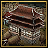 -
courthouse-法院 - 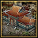 -
town_hall-市政厅 - 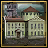 -
university-大学 - 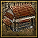 -
workshop-工坊 - 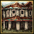 -
counting_house-会计室 - 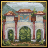 -
temple-教堂 - 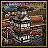 -
cathedral-大教堂 - 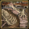 -
shipyard-造船厂 - 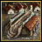 -
grand_shipyard-大船厂 - 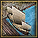 -
dock-船坞 - 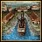 -
drydock-干船坞 - 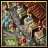 -
marketplace-集市 - 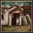 -
trade_depot-贸易仓库 - 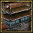 -
stock_exchange-证券交易所 - -
coastal_defence-岸防工事 - -
naval_battery-海防炮台 - 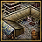 -
barracks-兵营 - 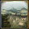 -
training_fields-训练营 - 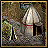 -
regimental_camp-军营 - 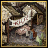 -
conscription_center-征召中心
防御类型建筑
工厂
版本沿袭
1.29版本的建造条件并非是“build_trigger”而是“trigger”
| 文档 | 效果指令 • 触发条件 • 修正 • 作用域 • 变量 • 本地化 • 可定制的本地化 |
| 脚本 | 顾问 • 时代 • 书签 • 建筑 • 宣战理由 • 殖民区域 • 新建国家 • 文化 • 决议 • 定义 • 外交行动 • 灾难 • 阶层• 事件 • 派系 • 政府 • 政府互动（1.35） • 伟大工程 • 历史 • 理念组 • 思潮 • 任务树 • 修正 • 自定义国家 • 政策 • 宗教 • 叛军 • 附属国类型 • 科技 • 贸易公司 • 商品 • 单位 • 旗舰 |
| 地图 | 地图 • 随机新世界 • 贸易节点 |
| 图形 | 3D模型 • 界面 • 贴图库 • 字体 • 粒子特效 • 着色器 • 兵模 |
| 音频 | 音乐 • 音效 |
| 其它 | 控制台指令 • 校验码 • JoroDox模组制作工具 • Mod文件结构 • Mod错误调试 • 验证器 • 运行文件 |
| 教程 | 添加省份 • 成就修改 • On actions • 模组制作 |